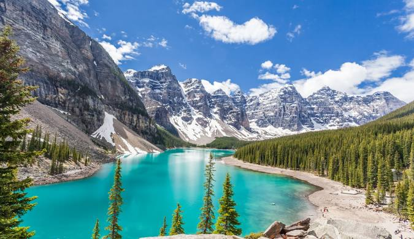

Banff
Mountains, lakes, and hiking trails with stunning scenery and outdoor adventures.
Mountains, lakes, and hiking trails with stunning scenery and outdoor adventures.

Historic Old Town with cobblestone streets and a festive atmosphere.

A cultural hub with music, arts, and food festivals throughout the year.

Coastal beauty that blends urban life with Pacific coast views.

Iconic landmarks like the CN Tower plus diverse cultural neighborhoods.

A world famous waterfall shared with the USA and a classic day trip from Toronto.